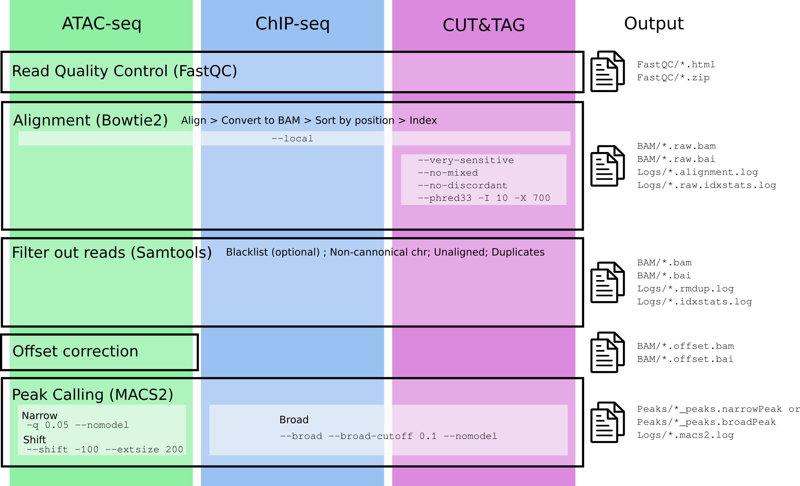
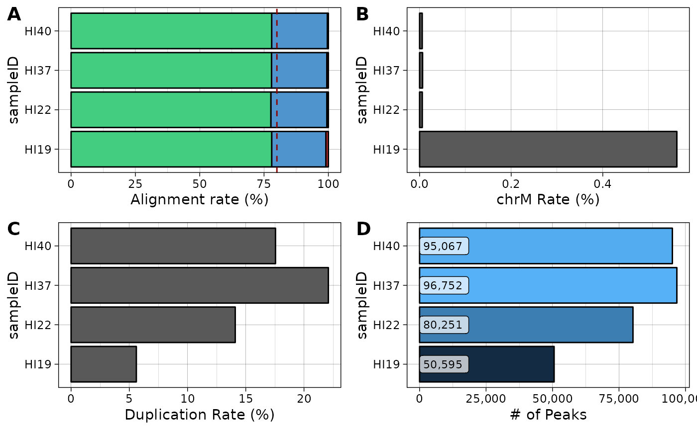

Processing epigenome data with pipelineNGS
Mireia Ramos-Rodriguez
introduction.RmdIntroduction
Package installation:
BiocManager::install("mireia-bioinfo/pipelineNGS")Load the package:
library(pipelineNGS)Requirements
External files
Optional:
- ENCODE Blacklist (
blacklist). You can download a bed file with the hg19 blacklisted regions from UCSC’s [wgEncodeDacMapabilityConsensusExcludable.bed.gz].
Mandatory for ATAC-seq offset correction and SEACR peak calling:
- Chromosome sizes (
gen_sizes). You can generate this file by usingfetchChromSizesfrom UCSC tools or downloading it directly from the UCSC: hg38 or hg19.
Recommended directory organization
I recommend you create a data directory within your project with the following structure:
- Data directory:
data/- 1 folder for each type of experiment:
ATAC-seq;ChiP-seq.-
BAM/output BAM files from alignment and post-processing. -
Peaks/directory with.narrowPeak,.broadPeakand other files created by the peak calling analysis. -
Logs/directory where the log outputs from different programs are saved. -
Visualization/directory to output the visualization files (bigWig and bedGraphs).
-
- 1 folder for each type of experiment:
Pipeline Overview
In this package we currently have implemented the pipelines for analyzing the following experiments:
- ATAC-seq (
ATAC). - ChIP-seq for histone marks (
CHIP). - CUTandTAG for histone marks (
CT). - CUTandRUN for transcription factors (
CR).
In the following figure you can see a description of the steps needed for the analysis of each type of experiment, with specific arguments (if any) used in the different steps.

The specific parameters used for each experiment are described in
paramdata:
knitr::kable(paramdata)| Parameter | Experiment | Extra_bowtie2 | Offset_correction | peak_type | shift |
|---|---|---|---|---|---|
| ATAC | ATAC-seq | TRUE | narrow | TRUE | |
| CHIP | ChIP-seq | FALSE | broad | FALSE | |
| CT | CUT&TAG | –very-sensitive –no-mixed –no-discordant –phred33 -I 10 -X 700 | FALSE | broad | FALSE |
| CR | CUT&RUN | FALSE | narrow | FALSE |
All these steps are implemented in a single function called
process_epigenome(). Critical parameters for this function
are the following:
-
fastq_files. In this argument you must provide as a character vector (only when reads are single end and each file corresponds to a single sample) or a list the complete paths for the fastq files you wish to process. A list input is mandatory for paired-end samples (each element of the list contains paths to R1 and R2), however you can use lists for single end reads if you have several files for a single sample that has been sequenced in different lines:
## Example Paired End ##
fastq_files <- c("fastq/sample1_L1_R1.fastq.gz", "fastq/sample1_L2_R1.fastq.gz",
"fastq/sample1_L1_R2.fastq.gz", "fastq/sample1_L2_R2.fastq.gz",
"fastq/sample2_L1_R1.fastq.gz", "fastq/sample2_L1_R2.fastq.gz")
## Convert to list to use as input for process_epigenome()
# Create one list element for each simple
names <- sapply(strsplit(basename(fastq_files), "_"), function(x) x[1])
fastq_list <- split(fastq_files, names)
# Make lists with R1 and R2 inside each sample
fastq_input <- lapply(fastq_list, function(x) list(R1=x[grepl("_R1.fastq.gz", x)],
R2=x[grepl("_R2.fastq.gz", x)]))
fastq_input## $sample1
## $sample1$R1
## [1] "fastq/sample1_L1_R1.fastq.gz" "fastq/sample1_L2_R1.fastq.gz"
##
## $sample1$R2
## [1] "fastq/sample1_L1_R2.fastq.gz" "fastq/sample1_L2_R2.fastq.gz"
##
##
## $sample2
## $sample2$R1
## [1] "fastq/sample2_L1_R1.fastq.gz"
##
## $sample2$R2
## [1] "fastq/sample2_L1_R2.fastq.gz"
## Example Single End ##
fastq_files <- c("fastq/sample1_L1.fastq.gz", "fastq/sample1_L2.fastq.gz",
"fastq/sample1_L3.fastq.gz", "fastq/sample2_L2.fastq.gz",
"fastq/sample3_L1.fastq.gz", "fastq/sample3_L3.fastq.gz")
## Convert to list to use as input for process_epigenome()
# Create one list element for each simple
names <- sapply(strsplit(basename(fastq_files), "_"), function(x) x[1])
fastq_input <- split(fastq_files, names)
fastq_input## $sample1
## [1] "fastq/sample1_L1.fastq.gz" "fastq/sample1_L2.fastq.gz"
## [3] "fastq/sample1_L3.fastq.gz"
##
## $sample2
## [1] "fastq/sample2_L2.fastq.gz"
##
## $sample3
## [1] "fastq/sample3_L1.fastq.gz" "fastq/sample3_L3.fastq.gz"-
out_name. Names to use for the output files. Should be the same length as the list/vector used as input infastq_files. The input names for the pipeline should be the name of the samples without any suffix. A suffix specific for each analysis and type of file will be added in each step of the analysis. -
seq_type. The type of experiment you are processing. Available options are listed at the beginning of this section. -
type. EitherSEfor single-end reads orPEfor paired-end reads.
Additional arguments refer to specific parts of the processing and will be described in the appropriate sections.
Data processing steps
All needed data processing steps are wrapped inside the function
process_epigenome. We will now go through every key step to
explain the important parameters.
The following chunk shows a minor example of how to run an analyses,
in this case of paired-end (type=PE) CUTandTAG data
(seq_type="CT"):
index <- "/vault/refs/indexes/hg38"
blacklist <- "/vault/refs/Blacklist/lists/hg38-blacklist.v2.bed"
# Using the files described in the previous chunk:
process_epigenome(fastq_files=fastq_input,
out_name=names(fastq_input),
run_fastqc=TRUE,
seq_type="CT",
type="PE",
index=index,
blacklist=blacklist,
cores=6)Quality control
The first step for any NGS pipeline is checking quality of the reads. This can be done using a program called FastQC, which takes as input FASTQ files and returns an html with several quality control analysis and if your sequences passed/failed each test.
This part is implemented inside process_epigenome() and
will run when argument run_fastqc=TRUE. You can use the
function fastqc() to perform only this analysis.
Results from this step are stored in a folder named
FastQC/.
Alignment
For the alignment of epigenetic data we use bowtie2
as an aligner. The output will be redirected into a pipe to create a
position-sorted and indexed BAM file (samplename.raw.bam).
The parameters used to run bowtie2 are:
-
--local: Perform local alignment (will clip sequences that do not match the reference). This allows us to align without removing the adapters, as they will be clipped from the sequence. -
-t: Print wall-clock time taken by search phases. -
-x <bt2-idx>: Index file name prefix (minus trailing .X.bt2). -
-U/-1,-2: Indicates the location and names of the fastq files to align.-Ustands for single-end reads and-1and-2for the pair 1 reads and pair 2 reads, respectively (paired-end reads). -
-p: Number of alignment threads to launch. - Additional parameters are added in the case of CUTandTAG samples, following the analysis described in: https://yezhengstat.github.io/CUTTag_tutorial/#311_Alignment_to_HG38
You can check the statistics of the alignment in the
Logs/ folder and the result for the alignment can be found
in BAM/*.raw.bam.
Post-processing
After the alignment, we need to do several post-processing steps in order to have homogeneous and filtered data for downstream analyses.
- Remove reads aligning to black-listed regions.
- Remove unaligned reads.
- Select reads aligning to cannonical chromosomes.
-
Remove duplicates using
samtools markdup.
You can check the statistics in the Logs/ folder and the
resulting file can be found in BAM/*.bam.
Offset correction (only ATAC-seq)
If we are dealing with ATAC-seq data, we need to
perform an offset correction to correct the reads for
the transposase binding event. This is implemented in the function
offsetATAC(), which uses bedtools
and awk and is used with paired-end data and
offsetATACSE() which uses
ATACseqQC::shiftGAlignments() to perform this same
correction (I don’t remember why I use different fuctions, I think the
ATACseqQC function did not work with paired-end reads?).
Warning: If you are trying to do some kind of allelle-specific analysis or any other analysis in which it is important the actual sequence of the read and its location, you might have to use BAM files without the offset correction.
The resulting file can be found in BAM/*.offset.bam.
Peak calling
In order to proceed with the analysis it is key to have the coordinates for the complete set of enriched regions in our experiment. The process of searching and reporting such regions is called peak calling.
To run these analysis we are going to use MACS2
callPeak function, which is implemented in
callPeak(). The parameters used in this step are determined
by the argument seq_type but can be overwritten by passing
them to process_epigenome() using the arguments:
-
type_peakindicates whether to callbroadornarrowpeaks. -
shiftindicates whether to shift the called peaks using the parameters--shift -100 --extsize 200in the MACS2 call.
This function will return several files in the folder
Peaks/ corresponding to our enriched regions.
Generate stats
It is possible to summarize the stats from the processing using a couple functions implemented in the package:
stats <-
getStats(
path_logs = system.file("extdata/Logs/", package="pipelineNGS"),
path_peaks = system.file("extdata/Peaks/", package="pipelineNGS"),
peak_suffix = "broadPeak"
)
knitr::kable(stats)| sampleID | total_reads | aligned_reads | multi_reads | chrM_reads | duplicate_reads | final_reads | alignment_rate | chrM_rate | duplicate_rate | final_rate | num_peaks |
|---|---|---|---|---|---|---|---|---|---|---|---|
| HI19 | 14558245 | 14421420 | 3069479 | 81782 | 816010 | 11898585 | 99.06015 | 0.5617573 | 5.60514 | 81.73090 | 50595 |
| HI22 | 48182652 | 47910520 | 10500399 | 2859 | 6792295 | 36155652 | 99.43521 | 0.0059337 | 14.09697 | 75.03873 | 80251 |
| HI37 | 85131100 | 84631826 | 18313682 | 5597 | 18807614 | 58077807 | 99.41352 | 0.0065746 | 22.09253 | 68.22161 | 96752 |
| HI40 | 78309325 | 78013102 | 16958214 | 4541 | 13746501 | 56648684 | 99.62173 | 0.0057988 | 17.55410 | 72.33964 | 95067 |
library(ggplot2)
library(scales)
theme_set(theme_linedraw(base_size=11))
## Plot alignment rates
al <-
pipelineNGS::plotAlignment(stats) +
scale_fill_manual(values=c("brown3", "steelblue3", "seagreen3")) +
ylab("Alignment rate (%)")
## Plot chrM rate
chrm <-
ggplot(stats,
aes(sampleID, chrM_rate)) +
geom_bar(stat="identity", color="black") +
coord_flip() +
ylab("chrM Rate (%)")
## Plot duplication rate
dup <-
ggplot(stats,
aes(sampleID, duplicate_rate)) +
geom_bar(stat="identity", color="black") +
coord_flip() +
ylab("Duplication Rate (%)")
## Plot called peaks
peaks <-
ggplot(stats,
aes(sampleID, num_peaks)) +
geom_bar(aes(fill=num_peaks), stat="identity", color="black") +
geom_label(aes(y=0, label=comma(num_peaks, accuracy=1)), hjust=0, nudge_y = 0, size=3,
alpha=.7) +
coord_flip() +
scale_y_continuous(labels=comma) +
theme(legend.position="none") +
ylab("# of Peaks")
## Composite plot
cowplot::plot_grid(al + theme(legend.position="none"),
chrm,
dup,
peaks,
ncol=2,
labels="AUTO")
Conversion to bigWig and Visualization
Once we have our post-processed data, we can proceed to visualize the coverage of our samples in a genome browser. We can choose between uploading the tracks to public servers and load them into UCSC Genome Browser or to use a local browser like IGV.
IGV allows to load BAM files and see the coverage and alignment of the reads, but if we want to look just at the distribution of reads, we need to create either BedGraph of BigWig files.
WORK IN PROGRESS